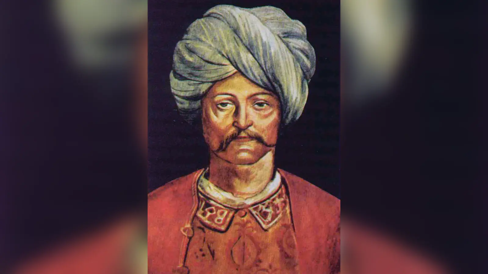
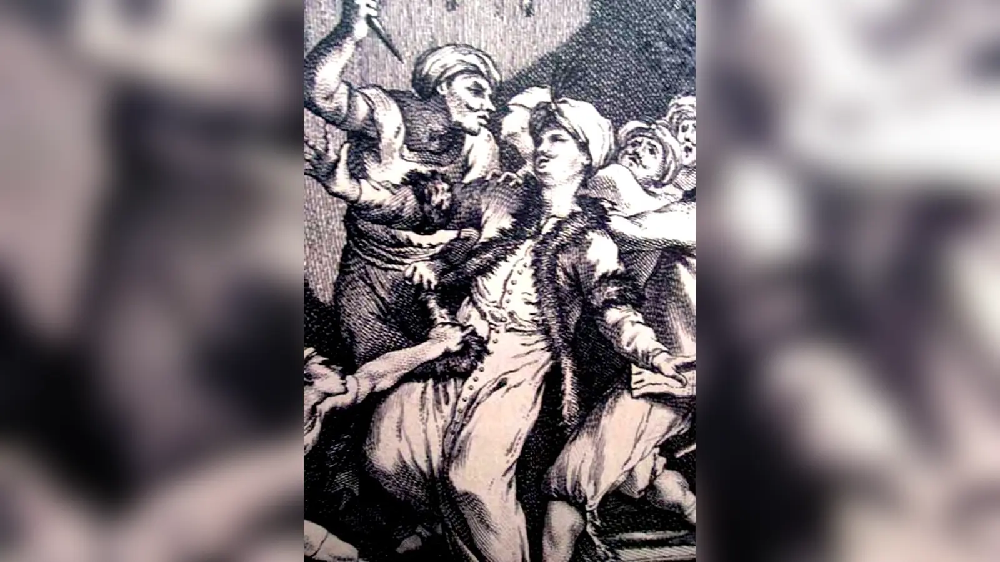
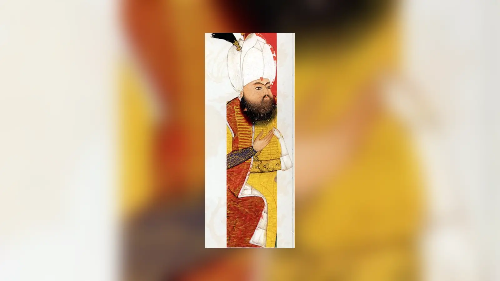
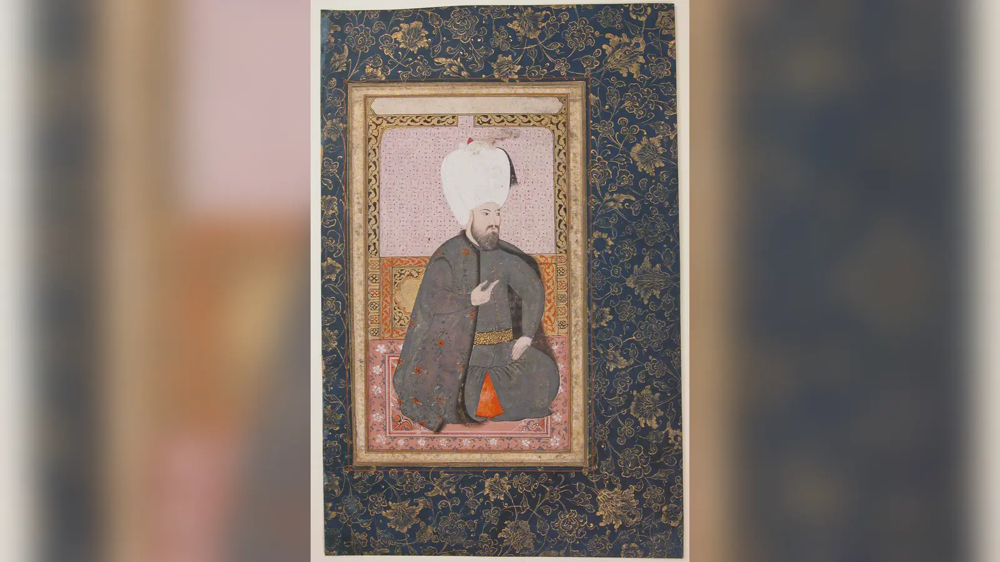

Bir padişah öldüğünde geride iki sağlıklı oğlu kalıyorsa bunlardan hangisi hükümdar olacaktı? Osmanlı tarihinin ilk yüzyıllarında bu sorunun "en büyük oğul" gibi herkesi bağlayan kesin bir cevabı yoktu. Tahta ulaşmayı başaran, askerî ve siyasi destek toplayan, rakiplerini geride bırakan hanedan mensubu hükümdar olabiliyordu. Bunun anlamı yalnız iki kardeşin kişisel rekabeti değildi. Her şehzade kendi çevresini kurabildiği, asker ve devlet adamlarından destek bulabildiği için bir hükümdarın ölümü aynı anda birden fazla iktidar merkezinin ortaya çıkmasına yol açabiliyordu. Kaybeden şehzadenin teslim olması da garanti değildi; başka bir eyalete çekilebilir, komşu bir hükümdardan yardım isteyebilir veya yıllarca sürecek bir iç savaş başlatabilirdi.
Fatih Sultan Mehmed'e atfedilen Kanunnâme-i Âl-i Osman'daki meşhur kardeş katli hükmü böyle bir siyasi dünyanın ürünüdür. Bugün yaygın biçimde "kardeş katli yasası" dediğimiz düzenleme, modern anlamda yalnız bu konu için hazırlanmış bağımsız bir yasa değildi. Devlet teşkilatı, saray protokolü ve hanedan düzenine ilişkin hükümler içeren kanunnamenin bir maddesiydi. Hüküm, saltanatın Fatih'in oğullarından hangisine nasip olursa onun "nizam-ı âlem" için kardeşlerini öldürmesinin uygun görüldüğünü ve ulemanın çoğunun buna cevaz verdiğini ifade ediyordu. Kullanılan dil önemlidir: Metin saltanatın hangi oğula geçeceğini önceden belirlemiyor, tahta ulaşan hükümdara rakip hanedan mensuplarını ortadan kaldırabileceği bir siyasi imkân tanıyordu.
Bu düzenlemeyi anlamak, onu savunmakla aynı şey değildir. Henüz isyan etmemiş, hatta çocuk yaşta olan bir şehzadenin gelecekte taht kavgasına dönüşebilecek bir ihtimal yüzünden öldürülmesi hem hukuk hem ahlak bakımından ağır bir problemdi. Buna karşılık uygulamayı yalnız "acımasız padişahların geleneği" diye açıklamak da Osmanlıların karşı karşıya kaldığı gerçek veraset sorununu görünmez kılar. Fetret Devri'nde hanedan mücadelesinin devleti parçalanmanın eşiğine getirdiği hafıza henüz canlıydı. Osmanlı siyasetinin çözmeye çalıştığı problem gerçekti; seçtiği çözümün bedeli de gerçekti.
Kardeş katli meselesinin en zor tarafı tam burada başlar. Siyasi etkililik ile hukuki meşruiyet, hukuki meşrulaştırma ile dinî emir, devletin devamı ile bir hanedan mensubunun yaşam hakkı aynı şey değildir. Fatih'in düzenlemesi bu alanları "nizam-ı âlem" kavramı altında birbirine bağlamaya çalıştı. Fakat sonraki iki yüzyıl, kardeş katlinin taht mücadelelerini tamamen ortadan kaldırmadığını, her infazın aynı şartlarda yapılmadığını ve sonunda Osmanlı hanedanının veraset sorununa başka bir çözüm aramak zorunda kaldığını gösterecekti.
Osmanlı Tahtı Neden En Büyük Oğula Geçmiyordu?
Osmanlı verasetini anlamadan kardeş katlini anlamak mümkün değildir. Avrupa tarihindeki bazı monarşilerde zamanla yerleşen primogenitür, yani hükümdarın en büyük meşru oğlunun öncelikli mirasçı sayılması, klasik Osmanlı verasetinin temel kuralı değildi. Osmanlı hanedanının erkek üyeleri arasında hükümdarlık hakkı tek bir oğula doğum sırasıyla kesin biçimde tahsis edilmiyordu. Padişahın oğulları geleceğin muhtemel hükümdarlarıydı ve hangisinin tahta çıkacağı çoğu zaman hükümdarın ölümünden sonra fiilî siyasi mücadeleyle belirleniyordu.
Bu yapı bazen "ülke hanedanın ortak malıdır" cümlesiyle açıklanır. Cümle, eski Türk egemenlik anlayışlarını özetlemek için yararlı olsa da Osmanlı tarihinin bütün dönemlerini açıklayan değişmez bir anayasa maddesi gibi kullanılmamalıdır. Kut, ülüş ve hanedan egemenliği kavramları Türk ve Türk-Moğol siyasi geleneklerinin yorumlanmasında önemlidir; ancak Osmanlı uygulaması yüzyıllar boyunca dönüşmüş, İslam hukukunun, fetih devletinin, saray kurumlarının ve imparatorluk merkeziyetçiliğinin etkisiyle kendine özgü bir yapı kazanmıştır.
Şehzadelerin sancaklara gönderilmesi bu veraset düzeninin merkezindeydi. Şehzade yalnız sarayda bekleyen bir prens değildi; yanında lalası ve görevlileriyle bir sancağa gidiyor, idare tecrübesi kazanıyor ve kendi hanesini oluşturuyordu. Bu sistem geleceğin hükümdarlarını yönetim konusunda eğitiyordu. Fakat aynı mekanizma, her şehzadeye çevre edinme ve siyasi destek oluşturma fırsatı da veriyordu. Padişah öldüğünde başkente daha yakın sancakta bulunan veya haberi daha erken alan şehzade önemli avantaj kazanabiliyordu.
Bu nedenle veraset sisteminin bir bakıma seçici bir işlevi vardı: mücadeleyi kazanan şehzade genellikle siyasi ve askerî kapasitesini kanıtlamış oluyordu. Fakat bunun bedeli belirsizlikti. Bir şehzadenin tahta çıkması diğerinin hükümdarlık iddiasını kendiliğinden ortadan kaldırmıyordu. Kaybeden kardeş destek toplamaya devam ederse iki ayrı saray, iki ayrı ordu ve iki ayrı meşruiyet iddiası ortaya çıkabiliyordu.
Osmanlıların asıl sorunu kardeşlerin birbirini sevmemesi değildi. Sorun, bir hükümdar öldüğünde "artık tartışmasız hükümdar şu kişidir" diyebilecek önceden belirlenmiş ve herkesçe kabul edilen bir veraset mekanizmasının bulunmamasıydı. Kardeş katli bu belirsizliği çözmek için rakipleri fiziksel olarak ortadan kaldıran sert bir yöntem hâline geldi. Başka bir deyişle sistem, veraset problemini kesin bir doğum sırası koyarak değil, mücadeleden sağ çıkan tek hanedan erkeğinin etrafında merkezileşerek çözmeye çalışıyordu.
Fatih'ten Önce de Hanedan Mensupları Öldürülüyor muydu?
Fatih Sultan Mehmed kardeşler arasındaki ölümcül hanedan mücadelesini sıfırdan icat etmedi. Osmanlılardan önce ve Osmanlıların çağdaşı birçok hanedanda taht rakiplerinin hapsedilmesi, kör edilmesi, sürgüne gönderilmesi veya öldürülmesi görülüyordu. Bizans, İran, Türk ve Moğol siyasi geleneklerinde hanedan içi mücadelelerin farklı örnekleri vardı. Bu benzerlikler Osmanlı uygulamasını otomatik olarak açıklamaz; fakat taht rekabetinin yalnız Osmanlılara özgü bir sorun olmadığını gösterir.
Osmanlı tarihindeki erken örneklerden biri I. Murad'ın oğlu Savcı Bey'dir. Savcı Bey babasına karşı isyan etti ve Bizans imparatoru V. İoannis'in oğlu Andronikos'la bağlantılı bir ayaklanmanın parçası oldu. İsyan bastırıldı; Savcı cezalandırıldı ve öldürüldü. Bu olay, daha sonra kanunnamede görülecek "tahta çıkan kardeşin muhtemel rakibini ortadan kaldırması" durumuyla birebir aynı değildir. Burada hükümdara karşı fiilî isyan söz konusuydu.
Daha doğrudan ve çok tartışılan örnek, 1389 Kosova Savaşı'nın ardından Yakub Çelebi'nin öldürülmesidir. I. Murad savaş alanında hayatını kaybedince oğulları Bayezid ve Yakub potansiyel taht adayları olarak kaldı. Bayezid'in hızla hükümdarlığı ele geçirmesi ve Yakub'un öldürülmesi, hanedan rekabetinin merkezî otorite adına rakibin tasfiyesiyle çözüldüğünü gösteren erken bir örnektir. Olayın ayrıntıları kaynaklara göre değişir; fakat Fatih'ten onlarca yıl önce kardeşin taht güvenliği gerekçesiyle ortadan kaldırılabildiği açıktır.
Asıl sarsıcı tecrübe ise 1402 Ankara Savaşı'ndan sonra geldi. Yıldırım Bayezid'in Timur'a yenilmesi yalnız bir savaşın kaybedilmesi değildi. Bayezid'in oğulları Süleyman, İsa, Musa ve Mehmed Çelebi farklı bölgelerde egemenlik iddiasında bulundu. Yaklaşık on bir yıl süren Fetret Devri boyunca Osmanlı ülkesinde birden fazla hanedan merkezi ortaya çıktı; kardeşler birbirleriyle savaştı, Balkan ve Anadolu güçleri mücadeleye müdahil oldu ve devletin siyasi birliği ağır biçimde sarsıldı. Sonunda Mehmed Çelebi rakiplerini yenerek birliği yeniden kurdu.
Fetret Devri'ni Fatih'in kardeş katli hükmünün tek sebebi ilan etmek aşırı basitleştirme olur. Arada onlarca yıl, başka hanedan krizleri ve merkeziyetçi devletin dönüşümü vardır. Fakat Fetret'in Osmanlı siyasi hafızasında bıraktığı ders açıktı: Aynı hanedandan birden fazla meşru adayın ayrı askerî güçlere dayanması, devleti yalnız saray içinde değil bütün coğrafyada parçalayabilirdi.
II. Murad dönemindeki Mustafa Çelebi ve Küçük Mustafa mücadeleleri de benzer kaygıları güçlendirdi. Mustafa Çelebi'nin taht iddiası dönemin siyasetinde Bizans'ın da kullandığı önemli bir sorun hâline geldi. II. Murad'ın kardeşi Küçük Mustafa da taht için harekete geçti. Bu örnekler, rakip hanedan mensuplarının yalnız içerideki gruplardan değil dış güçlerden de destek alabileceğini gösteriyordu.
Fatih tahta çıktığında karşısında teorik bir problem değil, önceki nesillerin defalarca yaşadığı bir siyasi risk vardı. Onun yaptığı yenilik, hanedan içi tasfiyeyi icat etmekten çok, daha önce fiilen başvurulan uygulamayı merkeziyetçi imparatorluğun yazılı düzeni içinde ifade etmekti.
Fetret Devri Parçalanma Korkusunu Nasıl Büyüttü?
Fetret Devri'nin kardeş katli tartışmasındaki önemi, "kardeşler kavga ederse devlet kesin yıkılır" gibi basit bir formülde değildir. Asıl önem, veraset belirsizliğinin ne kadar geniş bir siyasi krize dönüşebileceğini göstermesidir. Şehzadeler yalnız kişisel maiyetleriyle savaşmıyor; Anadolu beylikleri, Balkan aristokrasisi, Bizans ve askerî gruplar farklı adayları destekleyebiliyordu. Hanedan kavgası böylece uluslararası ve bölgesel güç mücadelesine dönüşüyordu.
Bu deneyim Osmanlı merkeziyetçiliğinin gelişimi açısından güçlü bir uyarıydı. Devlet genişledikçe bir iç savaşın maliyeti de büyüyordu. On beşinci yüzyılın ortalarında Osmanlı artık yalnız Bursa-Edirne eksenindeki bir beylik değildi. İstanbul'un fethinden sonra başkenti, sarayı, bürokrasisi ve imparatorluk iddiası çok daha güçlü bir merkez etrafında örgütleniyordu. Böyle bir yapıda aynı hanedanın iki üyesinin iki ayrı siyasi merkez kurması, yalnız aile kavgası değil imparatorluk egemenliğinin bölünmesi anlamına gelebilirdi.
Fakat Fetret Devri, sonraki her şehzadenin gerçekten ikinci bir Fetret başlatacağını kanıtlamıyordu. Tarihsel bir travma gelecekteki risk algısını büyütebilir. Kardeş katli hükmünün mantığı da tam olarak bu önleyici siyasette yatar: Tehdit gerçekleşmeden rakibi ortadan kaldırmak. Bu, bazı iç savaşları önlemiş olabilir; aynı mantık henüz hiçbir siyasi girişimde bulunmamış çocukların öldürülmesini de mümkün kıldı.
Dolayısıyla Fetret Devri hem uygulamanın rasyonel siyasi arka planını hem de en tehlikeli genişlemesini anlamamızı sağlar. Geçmişte yaşanmış gerçek bir felaket, gelecekteki her potansiyel rakibi felaketin başlangıcı gibi görmeye yarayan bir gerekçeye dönüşebilirdi.
Fatih Sultan Mehmed Neden Böyle Bir Düzenlemeye İhtiyaç Duydu?
Fatih Sultan Mehmed'in saltanatı Osmanlı siyasi yapısının ölçeğini değiştirdi. 1453'te İstanbul'un fethi yeni başkenti yalnız sembolik açıdan değil, idari açıdan da imparatorluğun merkezi hâline getirdi. Fatih eski aristokrat güç odaklarını dengelemeye, kul kökenli devlet adamlarının ağırlığını artırmaya, mali ve idari düzenlemeler yapmaya ve hükümdarlık otoritesini güçlendirmeye yöneldi. Onun siyasi projesinde merkeziyetçilik belirgin bir unsurdu.
Hanedan veraseti bu merkeziyetçiliğin en kırılgan noktasıydı. Güçlü bir merkez kurabilirsiniz; fakat hükümdarın ölümüyle aynı anda üç şehzade ayrı orduların başında birbirine karşı yürürse bütün yapı yeniden parçalanabilir. Bu yüzden Fatih'in teşkilat düzenlemeleriyle kardeş katli hükmü arasında mantıksal bir bağ vardır: Tek merkezli imparatorluk, tek hükümdarın tartışmasız egemenliğine dayanıyordu.
Fatih Kanunnamesi olarak bilinen metin, saray ve devlet teşkilatına ilişkin çok sayıda hükmü bir araya getirir. Günümüze ulaşan nüshaların tarihi, metnin hangi kısımlarının Fatih döneminde nasıl derlendiği ve sonraki istinsah süreci akademik tartışmalara konu olmuştur. Bu tartışma yokmuş gibi davranmak doğru değildir. Öte yandan kardeş katli hükmünün yalnız çok geç dönemde uydurulmuş, tarihsel karşılığı olmayan bir cümle olduğunu söylemek de mevcut araştırmanın ağırlığını yansıtmaz.
Meşhur hükmün günümüz Türkçesindeki özü şudur: Fatih'in oğullarından hangisine saltanat nasip olursa, devlet düzenini korumak için kardeşlerini öldürmesi uygun görülmüştür; ulemanın çoğunun da bunu caiz gördüğü belirtilir. Buradaki "saltanat müyesser ola" ifadesi başlı başına önemlidir. Kanunname "en büyük oğlum hükümdar olacaktır" demiyor. Önce siyasi süreç sonunda hükümdarlığı elde eden kişi beliriyor, sonra diğer hanedan adaylarının durumu ele alınıyor.
"Münasiptir" kelimesi de hükmü otomatik bir infaz emri gibi okumayı zorlaştırır. Metin her yeni padişahın istisnasız bütün kardeşlerini öldürmesini "vacip" veya değişmez bir zorunluluk olarak formüle etmez. Nitekim tarihsel uygulama da aynı değildir: Bazı padişahlar kardeşlerini öldürttü, bazıları öldürtmedi, bazı dönemlerde oğullar veya başka hanedan mensupları farklı siyasi şartlarda idam edildi.
Fatih'in hükmünün asıl yeniliği burada görülür. Daha önce meydana gelen hanedan tasfiyesi, devlet düzeni kavramıyla yazılı bir meşrulaştırma çerçevesine bağlanmıştır. Bu, kardeş katlini sıradan bir aile cinayeti olmaktan çıkarıp hükümdarlık ve kamu düzeni sorunu olarak tanımlamaya çalışıyordu.
"Nizam-ı Âlem" Ne Demekti?
"Nizam-ı âlem" ifadesini yalnız "dünya düzeni" diye çevirmek yeterli değildir. Osmanlı siyasi dilinde devletin, toplumun ve egemenlik düzeninin korunmasını çağrıştıran geniş bir meşruiyet kavramıdır. Hanedan mücadelesinin ülkeyi fitneye, savaşa ve otorite boşluğuna sürüklemesi ihtimaline karşı tek hükümdarın otoritesini korumak bu anlayışın içine yerleştirilebilirdi.
Bu düşünce erken modern devlet anlayışında bireyin yaşamıyla kamu düzeni arasında bugünkü hukuk devletinden çok farklı bir denge kuruyordu. Devletin ve toplumun geniş çaplı çatışmadan korunması, bir hanedan mensubunun hayatından daha üstün bir maslahat olarak görülebiliyordu. Kardeş katli hükmünün siyasi mantığı budur.
Fakat "nizam-ı âlem" sözü sihirli bir meşruiyet formülü değildir. Bir şehzadenin gerçekten isyan hazırlığında olması ile beş yaşındaki bir çocuğun ileride taht adayı olabileceği için öldürülmesi aynı tehdit düzeyinde değildir. Kavramın esnekliği tam da burada sorun yaratır. Gerçek bir iç savaşı önleme gerekçisiyle henüz gerçekleşmemiş bir ihtimal arasında geniş bir alan vardır.
Bu yüzden her kardeş katli vakasını yalnız kanunnamedeki cümleyi göstererek açıklamak tarihsel analizi bitirmez. Asıl soru, belirli infazda gerçekten hangi riskin bulunduğu, hükümdarın hangi bilgileri değerlendirdiği ve "devlet düzeni" gerekçesinin somut olayla ne kadar örtüştüğüdür.
"Ekser Ulema Tecviz Etmiştir" İfadesi Ne Anlama Geliyor?
Kanunnamenin en tartışmalı kısmı, ulemanın çoğunun uygulamayı tecviz ettiğini belirten ifadedir. "Tecviz etmek", uygun veya caiz görmek anlamında kullanılır. Bu cümle, kardeş katlinin doğrudan Kur'an'da emredildiği veya İslam hukukunun tartışmasız genel kuralı olduğu anlamına gelmez. Zaten böyle bir doğrudan dinî emir yoktur.
İslam hukukunda haksız yere insan öldürmek ağır biçimde yasaktır. Buna karşılık devlete silahlı başkaldırı, fitne, kamu düzeni ve siyaset yetkisi gibi konuların ayrı hukuki çerçeveleri vardır. Fiilen isyan eden bir şehzadenin durumuyla hiçbir eylemde bulunmamış bir çocuğun yalnız gelecekte tehlike oluşturabileceği gerekçesiyle öldürülmesi arasındaki hukuki problem bu yüzden büyüktür.
Osmanlı hukuk düzeni yalnız fıkıh kitaplarından oluşmuyordu. Padişahın devletin idaresine ilişkin örfî düzenlemeler yapabildiği geniş bir alan vardı. Fatih'in kanunnamesi bu örfî kanun koyma pratiğinin önemli örneklerindendir. Kardeş katli maddesinde ulemanın cevazına yapılan vurgu, siyasi düzenlemenin dinî-hukuki meşruiyet arayışını da gösterir.
Fakat "ulema" tek sesli bir kurum değildi. Yüzyıllar boyunca bütün hukukçuların her türlü önleyici kardeş katlini tartışmasız kabul ettiğini söylemek mümkün değildir. Modern hukuk tarihi çalışmalarında da hükmün İslam hukuku açısından nasıl değerlendirileceği konusunda ciddi görüş ayrılıkları vardır. Bazı araştırmacılar maslahat, fitne ve siyaset yetkisi üzerinden meşruiyet çerçevesi kurarken bazıları henüz suç işlememiş kişinin öldürülmesini İslam ceza hukukuyla bağdaştırmanın mümkün olmadığını savunur.
Bu nedenle iki popüler cümle de yetersizdir: "İslam kardeş katlini emretti" yanlıştır; "kardeş katlinin dinî hukukla hiçbir ilişkisi yoktu" demek de Osmanlıların uygulamayı meşrulaştırırken kullandığı hukuk dilini yok sayar. Daha doğru ifade, bunun siyasi bir veraset çözümü olduğu ve şer'î meşruiyetle bağdaştırılmaya çalışıldığıdır.
Fatih Kendi Kardeşini Öldürttü mü?
Fatih'in 1451'de ikinci kez tahta çıktığında küçük yaştaki kardeşi Ahmed'in öldürülmesi, kardeş katli tarihinin en çok tekrarlanan olaylarından biridir. Dönemin ve sonraki kaynakların anlatımları ayrıntılarda farklılaşır. Ahmed'in henüz çocuk olduğu ve Fatih'in tahta çıkışının ardından ortadan kaldırıldığı genel anlatının merkezindedir; infazın tam biçimi ve olayın aktarımı ise kaynak eleştirisi gerektirir.
Bu olayın önemi, kanunnamedeki düzenlemenin Fatih'in zihninde tamamen soyut bir ihtimal olmadığını göstermesidir. Ancak kanunnamenin elimizdeki biçimiyle tarihlendirilmesi ve hükmün derlenme süreci konusunda tartışmalar bulunduğu için "Fatih önce kanunu çıkardı, sonra maddesini uyguladı" gibi aşırı düzgün bir kronoloji kurmak yanıltıcıdır.
Daha güvenli sonuç şudur: Fatih döneminde hanedan rakibinin merkezî hükümdarlık adına tasfiye edilmesi hem fiilî uygulamada hem de ona atfedilen teşkilat kanunnamesinde meşrulaştırılan bir siyaset hâline geldi. Bu siyasetin kökleri Fatih'ten önceye gidiyordu; Fatih döneminde ise imparatorluk merkeziyetçiliğinin açık bir parçası hâline geldi.
Cem Sultan Olayı Kardeş Katli Mantığını Nasıl Gösterdi?

Fatih'in 1481'de ölümünden sonra oğulları II. Bayezid ile Cem Sultan arasındaki mücadele, kanunnamedeki problemin ne kadar gerçek olduğunu gösteren çarpıcı bir örnektir. İki şehzade de taht üzerinde hak iddia etti. Bayezid İstanbul'da iktidarı ele geçirirken Cem Anadolu'da mücadeleyi sürdürdü; Bursa'da kendi adına hükümdarlık alametleri gösterdi ve savaş kaybedildikten sonra Osmanlı sınırlarının dışına çıktı.
Cem'in hikâyesi daha sonra Memlükler, Rodos Şövalyeleri, papalık ve Avrupa diplomasisinin parçasına dönüştü. Yaşayan bir Osmanlı şehzadesi yabancı güçlerin elinde olduğunda, hükümdara karşı kullanılabilecek uluslararası bir siyasi koz hâline gelebiliyordu. Böylece kardeş katli savunucularının korktuğu senaryolardan biri somut biçimde ortaya çıktı: Tahtı kaybeden kardeşin varlığı, ülke içindeki mücadele sona erse bile hükümdarın güvenlik sorunu olmaya devam edebiliyordu.
Fakat Cem olayı aynı zamanda başka bir şeyi gösterir. Bayezid kardeşini tahta çıkar çıkmaz sarayda öldürmedi; mücadele savaş, sürgün ve uluslararası pazarlık biçiminde yıllarca sürdü. Demek ki kanunnamedeki hüküm mekanik biçimde her durumda aynı sonucu üretmiyordu. Siyasi şartlar, rakibin bulunduğu yer ve güç dengeleri uygulamayı belirliyordu.
Yavuz Sultan Selim Döneminde Hanedan Tasfiyesi
II. Bayezid'in son yılları oğulları Ahmed, Korkut ve Selim arasındaki mücadeleyle geçti. Selim sonunda babasının tahttan çekilmesiyle hükümdar oldu. Ardından kardeşleri ve onların erkek çocukları hanedan rekabetinin hedefi hâline geldi. Şehzade Korkut ve Ahmed'in öldürülmesi, yeni hükümdarın yalnız mevcut isyanları değil gelecekte yeniden ortaya çıkabilecek taht iddialarını da ortadan kaldırma siyasetini gösterir.
Bu dönem, kardeş katlinin yalnız "padişah ölür, yeni padişah saraydaki küçük kardeşlerini hemen boğdurur" biçiminde işlemediğini hatırlatır. Şehzadeler yetişkin, sancak sahibi ve siyasi çevrelere sahip aktörlerdi. Selim'in yükselişi bizzat yoğun bir veraset mücadelesinin sonucuydu.
Hanedan tasfiyesi burada merkezî otoritenin sağlamlaştırılmasıyla birleşti. Fakat yine aynı problem karşımıza çıkar: Gerçek isyan, potansiyel tehdit ve sırf hanedan soyundan gelmenin yarattığı risk birbirine karışabiliyordu. Kardeş katli siyaseti tam da bu sınırları bulanıklaştırdığı ölçüde genişledi.
Kanuni'nin Mustafa ve Bayezid'i Öldürtmesi Kardeş Katli miydi?

Kanuni Sultan Süleyman'ın oğulları Şehzade Mustafa ve Şehzade Bayezid'in öldürülmesi çoğu zaman kardeş katli başlığı altında anılır. Geniş anlamda hanedan içi tasfiye tarihinin parçalarıdır; fakat Fatih Kanunnamesi'ndeki "tahta çıkan hükümdarın kardeşlerini ortadan kaldırması" modeliyle birebir aynı değildir. Burada hüküm süren baba, kendi oğullarını siyasi tehdit olarak görerek idam ettirmiştir.
Mustafa 1553'te İran seferi sırasında Kanuni'nin emriyle öldürüldü. Mustafa'nın asker içindeki popülerliği, veraset beklentisi ve padişahın çevresinde oluşan kuşkular olayın siyasi bağlamını oluşturur. Hürrem Sultan ve Rüstem Paşa'nın Mustafa aleyhindeki rolü uzun süredir tartışılır; ancak nihai ölüm kararının Kanuni'ye ait olduğu gerçeği kaybolmamalıdır.
Şehzade Bayezid'in durumu daha farklıdır. Selim ile rekabeti açık çatışmaya dönüştü; Bayezid yenilerek Safevi hükümdarı Şah Tahmasb'a sığındı. Uzun diplomatik görüşmelerin ardından Bayezid ve oğulları teslim edilerek öldürüldü. Burada potansiyel tehditten ziyade fiilî hanedan savaşı ve yabancı hükümdara sığınma söz konusuydu.
İki vaka, Osmanlı veraset şiddetinin yalnız kardeşler arasında olmadığını gösterir. Sistem, hükümdarın oğullarını da gelecekteki taht mücadelesinin aktörleri olarak görüyordu. "Kardeş katli" terimi bu yüzden tarihsel literatürde bazen daha geniş hanedan tasfiyelerini anlatmak için kullanılsa da olayların hukuki ve siyasi farklarını korumak gerekir.
II. Selim Tahta Çıktığında Neden Büyük Bir Kardeş Katli Yaşanmadı?
II. Selim 1566'da tahta çıktığında Kanuni'nin hayatta kalan tek yetişkin oğlu durumundaydı. Mustafa ve Cihangir 1553'te, Bayezid ise 1561'de ölmüştü. Dolayısıyla Selim'in cülusunda III. Murad veya III. Mehmed dönemlerindeki gibi sarayda bekleyen çok sayıda erkek kardeş yoktu.
Bu basit gerçek önemli bir yöntem dersidir. Bir padişahın kardeş öldürtmemiş olması her zaman onun uygulamaya ahlaken karşı çıktığını, öldürtmesi ise her zaman aynı ölçüde tehdit bulunduğunu göstermez. Hanedanın o andaki demografisi, şehzadelerin yaşları ve siyasi konumları uygulamanın biçimini doğrudan etkiliyordu.
Kardeş katli tarihini yalnız padişahların kişiliklerine göre okumak bu nedenle yanıltıcıdır. Sistem bazı hükümdarlara birden fazla rakip bırakırken bazılarını zaten rakipsiz tahta çıkarıyordu.
III. Murad ve III. Mehmed Dönemlerinde Uygulama Neden Sertleşti?

III. Murad 1574'te tahta çıktığında beş erkek kardeşini öldürttü. Bu, yeni hükümdarın cülusunun hemen ardından potansiyel rakiplerin ortadan kaldırılması modelinin belirgin örneklerinden biridir. Ancak en sarsıcı olay 1595'te III. Mehmed'in tahta çıkışıyla yaşandı.
III. Mehmed, babası III. Murad'ın ölümünün ardından İstanbul'a geldi ve on dokuz erkek kardeşini boğdurtarak öldürttü. Bu şehzadelerin bir bölümü çocuktu ve fiilen başlatmış oldukları bir isyan yoktu. Tam da bu nedenle olay, kardeş katlinin "mevcut isyancıya karşı devlet savunması" ile açıklanamayacağı sınırı en açık biçimde gösterir. Burada yapılan şey, gelecekte ortaya çıkabilecek veraset ihtimalini daha başlangıçta fiziksel olarak yok etmekti.
İnfazların İstanbul'da yarattığı üzüntü ve cenazelerin görünümü, kroniklerde ve sonraki anlatılarda güçlü biçimde yer aldı. Olayı sırf dramatik ayrıntılarıyla anlatmak kolaydır; fakat tarihsel açıdan daha önemli olan, sistemin mantığının ulaştığı noktadır. Bir tarafta, on dokuz potansiyel hanedan rakibinin ileride farklı çevreler tarafından kullanılma ihtimali ortadan kaldırılmıştı. Diğer tarafta, hiçbir fiilî isyan başlatmamış çocukların yalnız doğumlarından kaynaklanan potansiyel yüzünden öldürülmesi, "nizam-ı âlem" gerekçesinin ahlaki sınırını görünür hâle getiriyordu.
Bu olayın ardından Osmanlı hanedanının veraset düzeni hemen değişmedi. Fakat 17. yüzyıl başında kardeş katli uygulamasının eski biçimiyle sürdürülebilirliği giderek daha fazla sorun hâline gelecekti. Bunun nedeni yalnız vicdani tepki değildi. Hanedanın erkek nüfusunu sürekli azaltmak, hükümdarın oğulsuz ölmesi hâlinde hanedanın devamını da riske atabilirdi.
Kardeş katlinin kendi çözmeye çalıştığı probleme benzeyen yeni bir problem üretmesi burada ortaya çıkar. Çok sayıda şehzade iç savaş riski yaratıyordu; çok az şehzade ise hanedanın biyolojik devamını kırılganlaştırıyordu.
Şehzadeler Nasıl Öldürülüyordu?
Osmanlı hanedan mensuplarının infazında boğma yönteminin sık kullanıldığı bilinmektedir. Bunun, hükümdar soyundan gelen kişinin kanının dökülmemesine yönelik eski saray ve hanedan gelenekleriyle ilişkili olduğu düşünülür. Kaynaklarda kement, yay kirişi veya benzeri araçlarla ilgili anlatılar bulunur. Ancak her infazın aynı araç ve törenle gerçekleştirildiğini söylemek doğru değildir.
"Hanedan kanı kutsaldı ve hiçbir koşulda yere dökülemezdi" şeklinde mutlak bir kural kurmak da gereksizdir. Tarih boyunca hanedan mensuplarının farklı biçimlerde öldüğü örnekler vardır. Burada daha güvenli olan, kansız infazın hükümdar ailesine ilişkin sembolik ve siyasi bir tercih olarak yaygınlaşmış olduğunu söylemektir.
İnfaz yöntemine fazla odaklanmak kardeş katli meselesini korku hikâyesine dönüştürebilir. Asıl önemli soru, neden öldürüldükleridir. Boğma biçimi saray kültürünü anlatır; fakat sistemi açıklayan şey veraset belirsizliği ve tek egemen yaratma arzusudur.
I. Ahmed Kardeşi Mustafa'yı Neden Öldürtmedi?

1603'te I. Ahmed tahta çıktığında kardeşi Mustafa hayattaydı. Önceki yüzyılın cülus pratiklerine bakıldığında Mustafa'nın öldürülmesi beklenebilirdi; ancak Ahmed onu hayatta bıraktı. Bu karar Osmanlı veraset tarihinde önemli bir dönüm noktasıdır, fakat "I. Ahmed kardeş katlini bir fermanla kaldırdı" şeklinde anlatılmamalıdır.
Ahmed tahta çıktığında çok gençti ve henüz hanedanın devamını güvenceye alacak oğulları yoktu. Mustafa'nın öldürülmesi durumunda Ahmed'in erken ve çocuksuz ölümü Osmanlı erkek hanedan çizgisini ciddi tehlikeye sokabilirdi. Hanedanın demografik güvenliği, daha önce rakipleri ortadan kaldırmayı teşvik eden mantığın tersine dönmesine yol açtı: Bu kez bir erkek kardeşin hayatta kalması devletin devamı için güvence hâline gelebiliyordu.
Ahmed'in oğulları doğduktan sonra da Mustafa'nın öldürülmemesi, değişimin yalnız geçici demografik tedbir olmadığını düşündürür. Fakat süreç doğrusal değildi. Ahmed'in 1617'de ölümü üzerine oğlu yerine kardeşi Mustafa'nın tahta çıkarılması, hanedanın en yaşlı erkek üyesine öncelik veren ekberiyet anlayışının güçlenmesinde kritik bir aşama oldu.
Bu dönüşüm, kardeş katlinin "insanlar daha merhametli oldu ve kötü uygulamayı bıraktı" biçiminde açıklanamayacağını gösterir. Veraset düzenindeki bu değişim, çocuk padişahların annelerine açtığı siyasi alan nedeniyle Kösem Sultan'ın yükselişini anlamak için de belirleyicidir. Hanedanın yapısı, şehzadelerin saraydaki konumu ve devletin veraset ihtiyacı değişmişti. Yeni sistemin de ağır bedelleri olacaktı.
II. Osman ve IV. Murad Dönemleri Neden "Kardeş Katli Bitti" Demeyi Zorlaştırıyor?
I. Ahmed'in Mustafa'yı hayatta bırakması ve 1617'den sonra ekberiyet eğiliminin güçlenmesi, kardeş katlinin bir gecede yok olduğu anlamına gelmedi. II. Osman 1621'de kardeşi Şehzade Mehmed'i öldürttü. Bu olay, eski güvenlik mantığının yeni veraset düzeni içinde hâlâ kullanılabildiğini gösterir.
IV. Murad döneminde de şehzade infazları yaşandı. Murad kardeşleri Bayezid ve Süleyman'ı, daha sonra Kasım'ı öldürttü; İbrahim ise hayatta kaldı ve Murad'ın 1640'taki ölümünden sonra tahta çıktı. Eğer İbrahim de öldürülmüş olsaydı Osmanlı hanedanının erkek çizgisinin devamı çok daha ciddi bir krize girebilirdi.
Bu örnekler, uygulamanın terk edilmesini tek tarihli bir "kaldırılma" olayı yerine uzun dönüşüm olarak görmemiz gerektiğini kanıtlar. 17. yüzyılda hanedanın erkek üyelerini öldürmek yerine sarayda denetim altında tutmak giderek tercih edilen yöntem oldu; fakat ölüm seçeneği tamamen ortadan kalkmadı.
Ekber ve Erşed Sistemi Nasıl Gelişti?
Ekberiyet, hanedanın en yaşlı erkek üyesinin tahta geçmesi ilkesidir. "Ekber ve erşed" ifadesi ise yaşın yanında olgunluk ve uygunluk düşüncesini de taşır; tarihsel uygulamada bu kavramların ne ölçüde sistematik biçimde işletildiği dönemlere göre değişir. 1617'de I. Mustafa'nın yeğenleri yerine tahta çıkarılması, babadan oğula veya kardeşler arasında mücadeleye dayanan eski veraset pratiğinden önemli kopuştu.
Yeni sistemin temel avantajı açıktı. Bir hükümdar öldüğünde hangi hanedan mensubunun öncelikli olduğu daha öngörülebilir hâle gelebiliyordu. Şehzadelerin ayrı sancaklarda ordu ve maiyet toplayarak başkente yarışması yerine hanedanın erkek üyeleri merkezde tutuldu. Böylece veraset rekabetinin coğrafi iç savaşa dönüşme ihtimali azaldı.
Ancak bu çözümün bedeli, şehzadelerin siyasi eğitim biçiminin değişmesiydi. Sancakta yönetim tecrübesi kazanmak yerine sarayda gözetim altında yaşayan şehzadeler devlet idaresinden uzak kalabiliyordu. Tahta çıktıklarında daha önce bir eyalet yönetmemiş, askerî sefer tecrübesi edinmemiş ve saray dışındaki siyasi dünyayla sınırlı temas kurmuş olabiliyorlardı.
Bu yüzden eski sistem "vahşi ama etkili", yeni sistem "insancıl ve kusursuz" şeklinde iki kutba ayrılamaz. Osmanlı veraset düzeni bir problemi azaltırken başka sorunlar üretiyordu.
Kafes Sistemi Neydi ve Gerçekten Daha İnsancıl mıydı?
"Kafes", Topkapı Sarayı içinde şehzadelerin gözetim altında tutulduğu yaşam düzenini anlatmak için kullanılan yaygın addır. Bu, kelimenin çağrıştırdığı gibi demir parmaklıklı tek bir hücreden ibaret değildi; şehzadeler saray içindeki dairelerde, hareket ve dış ilişkileri ciddi biçimde sınırlandırılmış şekilde yaşayabiliyordu.
Kafesin siyasi mantığı, kardeş katlinin mantığından farklı ama aynı probleme yönelikti. Taht rakibini öldürmek yerine onun bağımsız siyasi çevre oluşturması engelleniyordu. Şehzade hayatta kalıyor, böylece hanedanın erkek soyunun devamı için yedek oluşturuyor; fakat sancağa gidip asker ve bürokrat desteği toplayamıyordu.
Bu yöntem fiziksel ölüm riskini azalttığı ölçüde daha az kanlıydı. Fakat şehzadelerin uzun süre belirsizlik, gözetim ve iktidar korkusu altında yaşamaları ciddi insani sorunlar yaratabiliyordu. Bazıları yıllarca dış dünyadan uzak kaldıktan sonra tahta çıktı. Modern popüler anlatıda bütün şehzadelerin "delirdiği" gibi genellemeler doğru değildir; ancak siyasi tecrübe eksikliği ve kapalı yaşamın etkileri göz ardı edilemez.
En önemlisi, kafes kardeş katlini bir anda silmedi. II. Osman ve IV. Murad dönemlerindeki infazlar bunun açık kanıtıdır. Yeni düzen zaman içinde eski yöntemi geri plana itti.
Osmanlı Veraset Sisteminin Asıl Çelişkisi Neydi?
Kardeş katli tarihine bütün örnekler birlikte değerlendirildiğinde sistemin temel çelişkisi daha görünür hâle gelir. Osmanlılar uzun süre hükümdarlığı tek bir doğum sırasına bağlamayarak hanedanın farklı erkek üyelerine iktidar yolu açık bıraktı. Bu, teoride yetersiz bir büyük oğlun sırf önce doğduğu için otomatik hükümdar olmasını engelleyebilen esnek bir yapıydı. Sancak tecrübesi, askerî yetenek, çevre oluşturma ve siyasi beceri şehzadelerin gerçek mücadele içinde sınanmasına imkân veriyordu. Fakat aynı esneklik, hükümdarın ölümü anında herkesin kabul edeceği kesin halefi ortadan kaldırıyordu.
Bu yüzden sistem iki ayrı hedefi aynı anda gerçekleştirmeye çalışıyordu: Güçlü bir hükümdar seçebilmek ve hükümdarlık ortaya çıktıktan sonra tartışmasız birlik sağlamak. İlk hedef birden fazla şehzadenin rekabetine ihtiyaç duyuyor, ikinci hedef ise rekabetin mümkün olduğunca çabuk sona ermesini gerektiriyordu. Kardeş katli, tam bu çelişkinin keskin noktasında ortaya çıktı. Sistem önce birden fazla adaya hükümdarlık ihtimali tanıyor, ardından kazananın diğer ihtimalleri ortadan kaldırmasını meşrulaştırıyordu.
Şehzadelerin sancak eğitimi de aynı çift yönlü etkiyi yaratıyordu. Manisa, Amasya veya Konya gibi önemli sancaklarda bulunan bir şehzade idare öğreniyor, devlet adamlarını tanıyor ve gelecekte padişah olduğunda kullanacağı yönetim tecrübesini kazanıyordu. Fakat onun çevresindeki görevliler de kendi kariyerlerini şehzadenin geleceğine bağlayabiliyordu. Böylece şehzadenin şahsi hükümdarlık iddiası, onu destekleyen daha geniş bir siyasi grubun beklentisine dönüşüyordu. Taht kavgası yalnız iki kardeşin düellosu olmaktan çıkıp farklı çıkar ağlarının mücadelesi hâline geliyordu.
Bu açıdan bakıldığında kardeş katlinin neden yalnız kişisel zalimlikle açıklanamayacağı anlaşılır. Bir hükümdar kardeşini hayatta bıraktığında yalnız kardeşinin niyetine güvenmek zorunda değildi; o kardeşi ileride kullanmak isteyebilecek vezirleri, askerî grupları, eyalet güçlerini ve yabancı hükümdarları da hesaba katıyordu. Cem Sultan'ın Avrupa siyasetinde yıllarca Osmanlı hükümdarına karşı diplomatik koz hâline gelmesi bu korkunun hayal ürünü olmadığını gösterir.
Fakat aynı mantık, bireyin gerçek davranışından bağımsız biçimde tehlikeli sayılmasını da mümkün kılıyordu. Bir çocuk şehzadenin kendisi isyan planlamasa bile ileride bir grubun onu tahta aday göstermesi mümkündü. Bu durumda devlet güvenliği anlayışı niyet veya suç yerine kimliğe yöneliyordu: Şehzade olmak başlı başına risk hâline geliyordu. III. Mehmed dönemindeki toplu infazların yarattığı vicdani ağırlık tam olarak buradan doğar.
Ekberiyet ve kafes düzenine geçiş, bu çelişkiyi başka biçimde çözmeye çalıştı. Artık şehzadelerin birbirleriyle açık rekabet içinde yetişmesi yerine kimin halef olacağı daha öngörülebilir hâle geliyor, diğer erkekler bağımsız siyasi güç toplamaktan alıkonuyordu. Böylece sistem hükümdar seçimini rekabetten çok hanedan kıdemine bağlama yönünde ilerledi. Bedeli ise hükümdar adaylarının yönetim tecrübesinin azalmasıydı.
Bu değişim kardeş katli tartışmasına önemli bir ölçü verir. Uygulama ne Osmanlı siyasetinin değişmez özüydü ne de hiçbir siyasi mantığı olmayan rastgele şiddetti. Belirli bir veraset düzeninde işlev kazandı; o düzen değiştikçe işlevini kaybetti. Bu nedenle kardeş katlinin neden çıktığını sormak kadar, neden artık gerekli görülmemeye başladığını sormak da açıklamanın parçasıdır.
Kardeş Katli Gerçekten İç Savaşları Önledi mi?
Bu soruya verilecek en kolay cevaplardan ikisi de sorunludur. "Evet, kardeş katli sayesinde Osmanlı'da iç savaş olmadı" demek tarihsel olarak yanlıştır; Cem-Bayezid mücadelesi, Selim'in kardeşleriyle rekabeti ve Kanuni'nin oğulları arasındaki çatışma bunun tersini gösterir. "Hayır, hiçbir işe yaramadı" demek ise tahta çıkan hükümdarın rakiplerini hızla ortadan kaldırmasının bazı potansiyel savaşları başlamadan bitirmiş olabileceği ihtimalini yok sayar.
Savunma mantığı güçlüydü. Birden fazla yetişkin şehzade ayrı sancaklarda askerî ve bürokratik çevreler oluşturduğunda, hükümdarın ölümü ülkenin iki veya üç parçaya ayrılmasına yol açabilirdi. Fetret Devri bunun en ağır örneğiydi. Bir iç savaş yalnız şehzadelerin ölümüne değil, askerlerin, sivillerin ve şehirlerin büyük kayıplarına yol açabilirdi. Merkezi otoritenin hızla tek elde toplanması bu açıdan gerçek bir siyasi değer taşıyordu.
Fakat uygulamanın eleştirisi de aynı derecede güçlüdür. Her şehzade isyan etmiyordu. Özellikle sarayda çocuk yaşta bulunan kardeşlerin kendi başlarına askerî tehdit oluşturduğu söylenemez. Onların öldürülmesi, gelecekte başka aktörler tarafından kullanılabilecekleri ihtimaline dayanıyordu. Böylece suçtan sonra ceza değil, olası gelecek davranışına karşı önleyici ölüm söz konusu oluyordu.
Üstelik potansiyel tehdidin sınırı kolayca genişleyebilirdi. Bir şehzadenin popüler olması, askerlerin onu sevmesi veya yalnız erkek hanedan mensubu olarak hayatta bulunması bile hükümdarın güvenlik algısında risk hâline gelebilirdi. "Nizam-ı âlem" bu nedenle hem devletin gerçek krizlere karşı savunma kavramı hem de hükümdarlık güvenliğini çok geniş yorumlamaya elverişli bir gerekçeydi.
Kardeş katli ayrıca hanedanın erkek nüfusunu azaltıyordu. III. Mehmed'in on dokuz kardeşini öldürmesi kısa vadede rakipsiz bir hükümdarlık sağladı; fakat aynı mantığın her nesilde uygulanması hanedanın devamını birkaç çocuğun hayatına bağımlı hâle getirebilirdi. I. Ahmed döneminde Mustafa'nın yaşatılmasının ardındaki demografik kaygı, bu çelişkinin ne kadar ciddi olduğunu gösterir.
Burada varılabilecek en dengeli sonuç, kardeş katlini tek kelimeyle "işe yaradı" veya "işe yaramadı" diye değerlendiremeyeceğimizdir. Bazı veraset savaşlarını başlamadan engellemiş olması makuldür. Fakat bundan her infazın zorunlu olduğu sonucu çıkmaz. Siyasi bir yöntemin belirli bir amaca hizmet etmesi, o yöntemin her kullanımını hukuken veya ahlaken meşru kılmaz. Devlet güvenliği ile ahlaki meşruiyet iki ayrı sorudur.
Daha derindeki problem ise değişmeden kalıyordu: Osmanlılar uzun süre tahtın kime geçeceğini önceden kesinleştirmek yerine, hükümdarlık mücadelesini kazanan kişinin rakiplerini ortadan kaldırmasına dayanan bir sistem yürüttüler. Kardeş katli bu problemin sebebi değil, onun en sert çözümüydü.
Kardeş Katli Uygulaması Neden Zamanla Terk Edildi?
Uygulamanın geri plana çekilmesini yalnız ahlaki uyanışla açıklamak tarihsel değişimin mekanizmasını kaçırır. 16. yüzyılın sonlarından itibaren şehzadelerin sancağa gönderilmesi pratiği değişti. III. Mehmed sancakta görev yaptıktan sonra tahta çıkan son padişah oldu. Şehzadeler giderek merkezde tutuldu ve ayrı siyasi-askerî çevre kurma imkânları azaldı.
Bu değişim veraset tehdidinin doğasını dönüştürdü. Sancakta kendi maiyeti ve destekçileri bulunan yetişkin şehzade ile sarayda gözetim altında tutulan kardeş aynı risk profiline sahip değildi. Rakibin siyasi kapasitesi azaltılınca onu fiziksel olarak ortadan kaldırma ihtiyacı da azaldı.
Hanedan demografisi ikinci etkendi. Sürekli tasfiye, erkek soyunun devamını tehlikeye atabilirdi. I. Ahmed'in tahta çıktığı sırada kardeşi Mustafa'nın hayatta tutulması bu kaygıyla anlam kazanır. Daha sonra hanedanın yaşça en büyük erkeğinin tahta çıkması yönündeki eğilim, hükümdarın kardeşini yalnız rakip değil gelecekteki meşru halef olarak görmeye imkân verdi.
Saray güvenliği de değişti. Kafes düzeni, şehzadelerin başkentten kaçıp bağımsız güç oluşturmasını zorlaştırıyordu. Böylece devlet, rakibi öldürmeden etkisizleştirebileceği yeni bir araç geliştirdi. Bu sistem insani açıdan problemsiz değildi; fakat hanedanın erkek üyelerini koruyarak veraset için yedek bırakıyordu.
Sonuçta kardeş katli tek bir fermanla bir gecede kaldırılmadı. Eski uygulama 17. yüzyılda bazı şehzade infazlarıyla devam etti, fakat veraset mantığının değişmesiyle istisnai hâle geldi. Asıl dönüşüm, devletin "rakibi öldürerek tek hükümdar yaratma" yönteminden "rakibi denetim altında tutarak sıradaki hanedan üyesi olarak koruma" yöntemine geçmesiydi.
Bu dönüşüm, kardeş katlinin tarihini anlamak için belki de en güçlü kanıttır. Eğer uygulama yalnız padişahların kişisel zalimliğinden doğsaydı, kurumsal veraset değişince bu kadar belirgin biçimde gerilemesini açıklamak zor olurdu. Eğer vazgeçilmez bir devlet zorunluluğu olsaydı, Osmanlı Devleti sonraki yüzyıllarda onsuz varlığını sürdüremezdi. Gerçekte uygulamanın yükselişi de gerileyişi de veraset sisteminin nasıl örgütlendiğiyle yakından bağlantılıydı.
Kardeş Katli Hakkında En Yaygın Yanlışlar
Fatih'in kardeş katlini "icat ettiği" düşüncesi tarihsel kronolojiyle uyuşmaz. Savcı Bey, Yakub Çelebi ve Fetret Devri gibi örnekler hanedan içi şiddetin daha önce bulunduğunu gösterir. Fatih'in farkı, mevcut siyasi pratiği kendi merkeziyetçi düzeni içinde kanunnameye bağlamasıdır.
Her padişahın bütün kardeşlerini öldürmek zorunda olduğu iddiası da doğru değildir. Kanunnamenin dili otomatik ve istisnasız bir emir şeklinde değildir; tarihsel uygulama zaten bunu göstermez. Bazı padişahların kardeşleri hayatta kaldı, bazı dönemlerde kardeş katli yerine hapis ve gözetim tercih edildi.
"Kardeş katli Kur'an'ın emridir" iddiasının tarihsel dayanağı yoktur. Düzenleme Osmanlı siyasi-hukuki pratiğinin ürünüdür ve dinî meşruiyetle bağdaştırılmaya çalışılmıştır. Aynı şekilde bütün öldürülen şehzadelerin isyan etmiş olduğu da doğru değildir. III. Mehmed'in çocuk kardeşleri bunun en açık örneğidir.
I. Ahmed'in uygulamayı bir gecede kaldırdığı anlatısı da dönüşümü fazla basitleştirir. Mustafa'nın hayatta bırakılması önemli dönüm noktasıdır; fakat II. Osman ve IV. Murad dönemlerinde şehzade infazları devam etti. Kafes sistemi de bütün sorunları çözmedi; yalnız veraset riskini farklı biçimde yönetti.
Son olarak, kardeş katli sayesinde Osmanlı'da hiç iç savaş çıkmadığı söylenemez. Hanedan mücadeleleri kanunname sonrasında da yaşandı. Kardeş katli iç savaş riskini azaltmaya yönelik araçlardan biriydi; veraset siyasetinin bütün çatışmalarını ortadan kaldıran kusursuz mekanizma değildi.
Sonuç: Devlet Düzeninin Bedeli Kimin Hayatıydı?
Kardeş katli yasası neden çıkarıldı sorusunun en kısa cevabı, Osmanlı tahtının kime geçeceğini önceden kesin biçimde belirlemeyen veraset sisteminin ürettiği iç savaş riskidir. Fakat yalnız bu cümlede kalmak, uygulamanın neden Fatih döneminde yazılı bir düzenlemeye dönüştüğünü ve neden iki yüzyıl sonra geri plana çekildiğini açıklamaz.
Fatih'in önünde gerçek tarihsel örnekler vardı. Yakub Çelebi'nin tasfiyesi hanedan rakibinin hızla ortadan kaldırılabildiğini, Fetret Devri birden fazla şehzadenin mücadelesinin devleti parçalayabildiğini, Mustafa isyanları ise hanedan mensuplarının dış güçler tarafından kullanılabildiğini göstermişti. İstanbul'un fethinden sonra çok daha merkezi bir imparatorluk kuran Fatih açısından veraset belirsizliği devletin en tehlikeli kırılma noktalarından biriydi. Kanunnamedeki "nizam-ı âlem" hükmü bu korkuya verilmiş sert bir cevaptı.
Fakat hükmün siyasi mantığını anlayabilmek, sonuçlarını meşru ilan etmeyi gerektirmez. III. Mehmed'in hiçbir isyan başlatmamış çocuk kardeşlerinin öldürülmesi, önleyici güvenlik mantığının ne kadar ileri gidebildiğini gösterir. Gerçek bir orduyla ayaklanan yetişkin şehzade ile gelecekte belki kullanılabilecek küçük bir çocuk aynı kategoriye konduğunda "devlet düzeni" gerekçesi insan hayatı üzerinde neredeyse sınırsız bir yetkiye dönüşebilir.
Öte yandan geçmişi yalnız bugünün hukuk kavramlarıyla mahkûm etmek de tarihsel açıklama değildir. Osmanlı hükümdarları hanedan iç savaşının binlerce insanı etkileyebilecek sonuçlarını biliyorlardı. Devletin parçalanması soyut bir korku değildi; Fetret Devri yaşanmıştı. Kardeş katli bu nedenle irrasyonel bir vahşet değil, erken modern egemenlik anlayışı içinde rasyonelleştirilmiş çok sert bir güvenlik siyaseti olarak görülmelidir. Tam da bu nedenle ahlaki problemi küçülmez, daha görünür hâle gelir: Sistem bilinçli biçimde bir hanedan mensubunun yaşamıyla daha geniş siyasi düzen arasında tercih yapıyordu.
Uygulamanın zamanla gerilemesi de asıl sorunun "kötü kardeşler" olmadığını ortaya koyar. Veraset biçimi değişti, şehzadelerin sancaklara çıkışı sona erdi, hanedanın en yaşlı erkeğinin tahta geçmesi güçlendi ve rakipler saray içinde kontrol altında tutulmaya başlandı. Kurumlar değişince ölümcül çözümün gerekliliği de azaldı. Kafes yeni sorunlar üretti, ancak aynı veraset krizini kardeşleri topluca öldürmeden yönetmenin mümkün olduğunu gösterdi.
Bu yüzden kardeş katli tarihini iki rahat hükümden birine teslim etmek doğru değildir. Onu yalnız "barbarlık" diye adlandırmak, Osmanlıların çözmeye çalıştığı gerçek iç savaş ve parçalanma sorununu görmez. Onu "devlet için şarttı" diyerek aklamak ise her öldürülen şehzadenin gerçekten devleti tehdit ettiğini varsayar ve özellikle çocukların ödediği bedeli görünmez kılar. Tarihin zor tarafı, iki gerçeği aynı anda kabul etmektir: Osmanlı veraset problemi gerçekti; ona verilen kardeş katli cevabının insani bedeli de gerçekti.
Belki de uygulamanın bıraktığı en önemli ders budur. Kardeş katli, devletin devamını sağlamak için hanedan mensubunun hayatını feda edebilen bir siyaset anlayışının ürünüydü. Fakat aynı devlet, şartlar değiştiğinde başka bir veraset düzeni kurabildi. Bu da kardeş katlinin kaçınılmaz bir Osmanlı kaderi olmadığını, belirli bir siyasi sistemin belirli koşullarda ürettiği tarihsel bir çözüm olduğunu gösterir.
Sık Sorulan Sorular
Kardeş katli yasası neden çıkarıldı?
Osmanlı tahtının otomatik olarak en büyük oğula geçmesini sağlayan kesin bir veraset kuralı bulunmadığı için padişahın oğulları hükümdarlık iddiasında bulunabiliyordu. Şehzadelerin sancaklarda ayrı çevre ve askerî destek oluşturabilmesi, hükümdarın ölümünden sonra mücadeleyi iç savaşa dönüştürebiliyordu. Fetret Devri bu riskin en ağır örneğiydi. Fatih Sultan Mehmed'e atfedilen kanunnamedeki düzenleme, tahta çıkan şehzadenin "nizam-ı âlem" gerekçesiyle kardeşlerini ortadan kaldırabilmesini meşrulaştırmaya çalıştı. Amaç tek merkezli hükümdarlığı hızla kurmaktı; bununla birlikte her infazın gerçekten yaklaşan bir iç savaşı önlediği söylenemez.
Kardeş katli yasasını kim çıkardı?
"Kardeş katli yasası" diye anılan hüküm Fatih Sultan Mehmed'in Kanunnâme-i Âl-i Osman'ında yer alır. Bunun modern anlamda yalnız kardeş katli için hazırlanmış bağımsız bir yasa olmadığını belirtmek gerekir. Fatih ayrıca kardeş veya hanedan rakibi öldürme uygulamasını sıfırdan başlatmadı; Osmanlılarda Fatih'ten önce de hanedan içi tasfiyeler ve ölümcül taht mücadeleleri yaşanmıştı. Fatih döneminin farkı, daha önce fiilen görülen bu siyasetin merkeziyetçi imparatorluk düzeni içinde "nizam-ı âlem" gerekçesiyle yazılı bir teşkilat hükmüne bağlanmasıdır. Kanunnamenin günümüze ulaşan nüshaları ve metin tarihi konusunda akademik tartışmalar da bulunmaktadır.
Fatih Sultan Mehmed kardeş katlini gerçekten zorunlu hâle getirdi mi?
Kanunnamedeki hükmü "her padişah bütün kardeşlerini mutlaka öldürmek zorundadır" şeklinde okumak doğru değildir. Metinde saltanatın Fatih'in oğullarından hangisine nasip olursa onun kardeşlerini nizam-ı âlem için öldürmesinin "münasip" olduğu belirtilir ve ulemanın çoğunun bunu tecviz ettiği söylenir. Kullanılan ifade otomatik ve istisnasız bir emirden ziyade hükümdara tanınan siyasi-hukuki imkânı gösterir. Tarihsel uygulama da tek biçimli değildir: Bazı hükümdarlar kardeşlerini öldürttü, bazıları yaşattı. 17. yüzyılda ekberiyet ve kafes düzeninin gelişmesiyle kardeş katli giderek geri plana çekildi.
Kardeş katli dinen caiz miydi?
Bu konuda tek cümlelik cevap tarihsel tartışmayı bozar. İslam hukukunda haksız yere insan öldürmek yasaktır; devlete silahlı isyan ve kamu düzenini bozan fiiller ise ayrı hukuki çerçevede değerlendirilir. Sorun, henüz isyan etmemiş bir şehzadenin gelecekte tehdit oluşturabileceği düşüncesiyle öldürülmesinde ortaya çıkar. Fatih Kanunnamesi ulemanın çoğunun uygulamayı tecviz ettiğini söyler ve Osmanlı hukuk geleneğinde konu nizam-ı âlem, fitne, maslahat ve hükümdarın siyasi yetkisi bağlamında meşrulaştırılmıştır. Buna karşılık uygulamanın İslam hukuku açısından meşruiyeti tartışmalıdır. Kardeş katlini doğrudan bir Kur'an emri gibi göstermek yanlıştır.
III. Mehmed neden 19 kardeşini öldürdü?
III. Mehmed 1595'te babası III. Murad'ın ölümünün ardından tahta çıktığında on dokuz erkek kardeşini öldürttü. Kararın siyasi mantığı, gelecekte alternatif hükümdar adayı olarak kullanılabilecek bütün erkek kardeşleri ortadan kaldırıp saltanatı güvenceye almaktı. Ancak kardeşlerin bir kısmı çocuktu ve fiilen başlatmış oldukları bir isyan yoktu. Bu nedenle olay, kardeş katli uygulamasının en tartışmalı örneklerinden biridir. III. Mehmed vakası, "nizam-ı âlem" gerekçesinin gerçek bir isyanı bastırmanın ötesine geçerek muhtemel gelecekteki tehdidi önceden ortadan kaldırma aracına dönüşebildiğini açık biçimde gösterir.
Kardeş katli ne zaman kaldırıldı?
Kardeş katlinin tek bir tarihte çıkarılan kararla tamamen kaldırıldığı söylenemez. I. Ahmed'in 1603'te tahta çıktıktan sonra kardeşi Mustafa'yı öldürtmemesi önemli bir dönüm noktasıdır. I. Ahmed'in 1617'deki ölümünden sonra Mustafa'nın tahta çıkarılmasıyla hanedanın yaşça büyük erkek üyesine öncelik veren ekberiyet anlayışı güçlendi. Şehzadelerin sancaklara gönderilmesinin sona ermesi ve sarayda denetim altında tutulması da sistemi değiştirdi. Buna rağmen II. Osman'ın Şehzade Mehmed'i, IV. Murad'ın bazı kardeşlerini öldürtmesi uygulamanın bir gecede bitmediğini gösterir. Kardeş katli 17. yüzyıl boyunca giderek istisnai hâle geldi.
Kafes sistemi nedir ve kardeş katlinin yerini nasıl aldı?
Kafes sistemi, Osmanlı şehzadelerinin Topkapı Sarayı içinde gözetim altında tutulduğu yaşam düzenine verilen yaygın addır. Şehzadeler artık sancaklara giderek kendi askerî ve bürokratik çevrelerini kurmak yerine merkezde denetleniyordu. Böylece tahta çıkan padişahın kardeşlerini öldürmeden potansiyel rakiplerin siyasi hareket alanını sınırlamak mümkün hâle geldi. Aynı zamanda hanedanın erkek üyeleri hayatta tutularak soyun devamı güvence altına alınıyordu. Fakat kafes kusursuz bir çözüm değildi. Uzun süre sarayda kapalı yaşayan şehzadeler yönetim deneyiminden yoksun kalabiliyor ve ağır baskı altında yaşayabiliyordu. Ayrıca şehzade infazları hemen sona ermedi.
Kaynakça
- Özcan, Abdülkadir. "Fatih'in Teşkilat Kanunnamesi ve Nizam-ı Âlem İçin Kardeş Katli Meselesi." İstanbul Üniversitesi Edebiyat Fakültesi Tarih Dergisi, sayı 33, 1980--1981, s. 7--56.
- Akman, Mehmet. Osmanlı Devleti'nde Kardeş Katli. İstanbul: Eren Yayıncılık, 1997.
- Akman, Mehmet. "Osmanlı Devletinde Kardeş Katli Uygulaması." Uçmağa Varmak Kitabı. İstanbul: Kitabevi, 2009, s. 227--239.
- Akman, Mehmet. "Kardeş Katli ve Hukuki Boyutu." Düşten Fethe İstanbul, 2015, s. 219--231.
- İnalcık, Halil. Osmanlı İmparatorluğu Klasik Çağ (1300--1600). Çeşitli Türkçe baskılar.
- İnalcık, Halil. Fatih Devri Üzerinde Tetkikler ve Vesikalar I. Ankara: Türk Tarih Kurumu.
- İnalcık, Halil. "Osmanlı Hukukuna Giriş: Örfî-Sultanî Hukuk ve Fatih'in Kanunları." Ankara Üniversitesi Siyasal Bilgiler Fakültesi Dergisi.
- Uzunçarşılı, İsmail Hakkı. Osmanlı Devleti'nin Saray Teşkilâtı. Ankara: Türk Tarih Kurumu.
- Uzunçarşılı, İsmail Hakkı. Osmanlı Tarihi. Ankara: Türk Tarih Kurumu, ilgili ciltler.
- Imber, Colin. The Ottoman Empire, 1300--1650: The Structure of Power. Palgrave Macmillan.
- Kafadar, Cemal. Between Two Worlds: The Construction of the Ottoman State. University of California Press, 1995.
- Finkel, Caroline. Osman's Dream: The Story of the Ottoman Empire 1300--1923. John Murray, 2005.
- Emecen, Feridun M. Osmanlı İmparatorluğu'nun Kuruluş ve Yükseliş Tarihi (1300--1600). Türkiye İş Bankası Kültür Yayınları.
- Âşıkpaşazâde. Tevârîh-i Âl-i Osman, akademik neşirleri.
- Neşrî. Kitâb-ı Cihannümâ, akademik neşirleri.
- Hoca Sâdeddin Efendi. Tâcü't-Tevârîh, ilgili ciltler.
- Peçevî İbrahim Efendi. Peçevî Tarihi, ilgili ciltler.
- TDV İslâm Ansiklopedisi, II. Mehmed, III. Mehmed, I. Ahmed, I. Mustafa ve ilgili şehzade/veraset maddeleri.